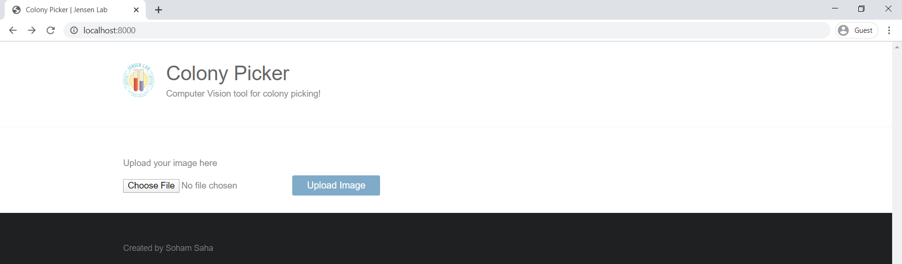
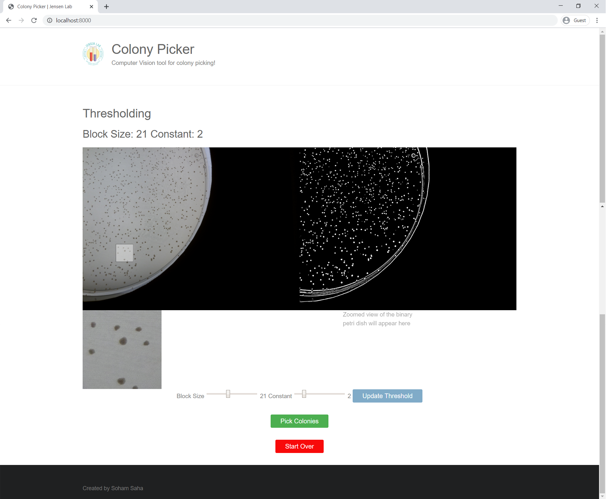
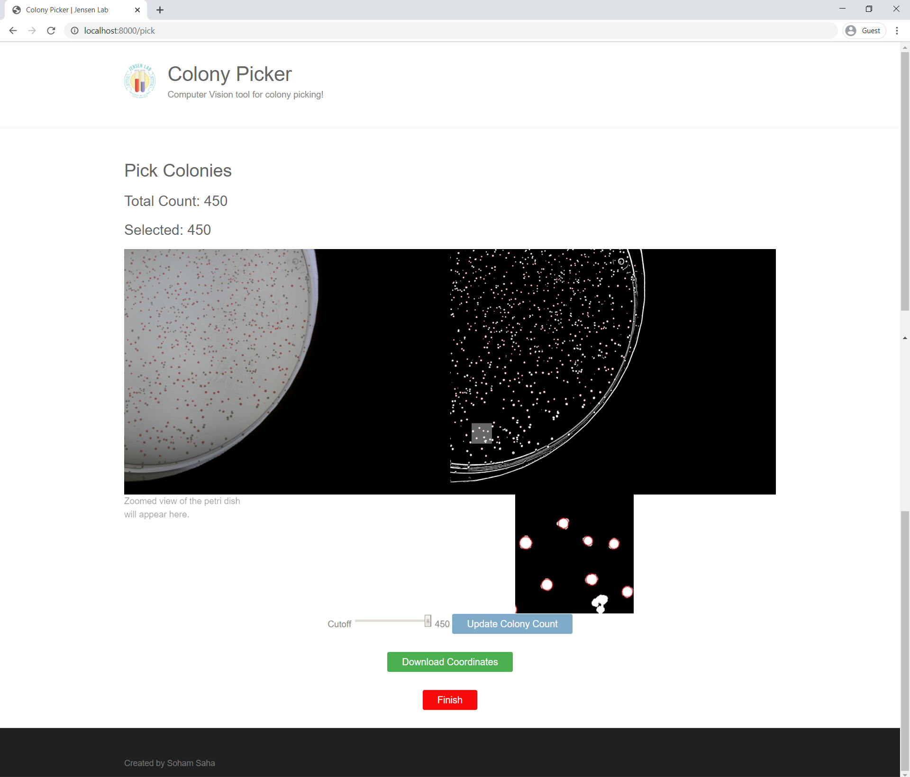

Jensen Lab

I work under the guidance of Professor Paul Jensen to study how the bacteria S. sobrinus plays a role in cavity formation using computational techniques. My role is to build automated solutions for bacteria transformation experiments. I am building a colony picking tool that uses a computer vision algorithm to detect viable colonies and then creates a protocol for a robotic arm to carry out the experimentation. I deployed this tool as a Django web application for microbiologists to utilize in their day-to-day experiments.
Below are screenshots of the web application interface.
Home Page
Users upload an image of a petri dish filled with bacterial colonies on the home page.
Threshold Page
The threshold page contains a view of the uploaded image (left) and a view of the same image after converting it to a binary image (right). There is a zoom-tool that allows users to hover over either image and a zoomed preview of the selected region will appear below. The bottom of the page contains range sliders to update the parameters of the binary threshold.
Colony Picking Page
The colony picking page analyzes how many viable single colonies are present on the petri dish. These viable colonies are ranked and have a red outline in the original and binary image. There is a range slider for the user to choose how many colonies they want to pick out. Below the range slider is a "Download Coordinates" button that outputs the coordinates of the selected colonies into a CSV file.